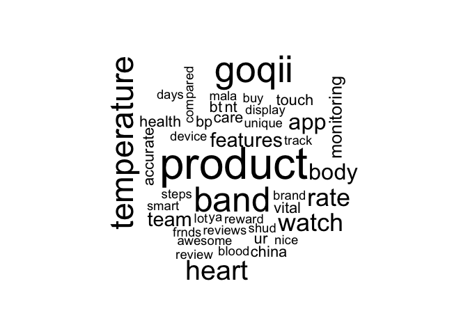
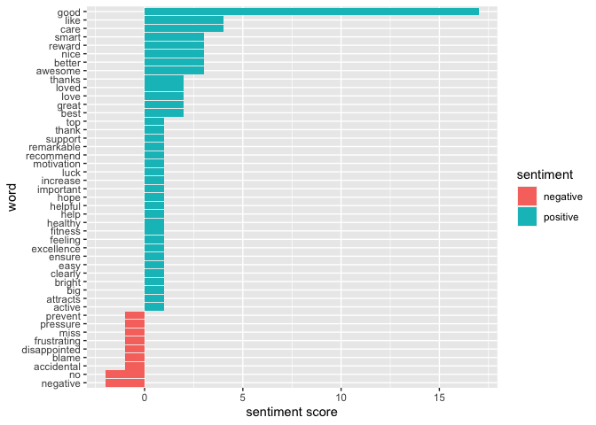
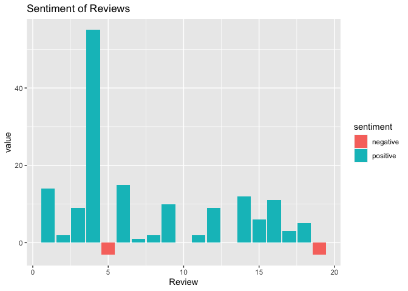
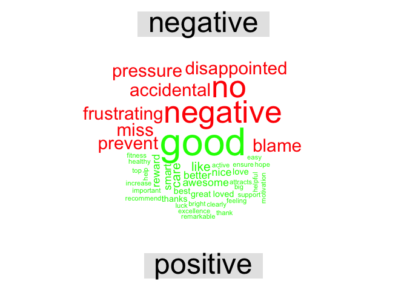

Businesses, nowadays are becoming more customer centric and customers love being heard. They are more than willing to share their opinions and experience.
Sentiment analysis paves the way to make this happen.If used properly, it can reveal gold mines inside the thoughts and opinions of your customers.
Sentiment Analysis
Sentiment Analysis is a process of extracting opinions that have different polarities (positive, negative or neutral). We identify the tone in which the customer speak about your product. So by able to track before hand the sentiment across the customers, that company can be well equipped to tackle what might coming their way.
Here, I would like to perform sentiment analysis on analyzing the customer reviews of a product launched by the company XYZ, a smart health tracker manufacturer.
When we have a few reviews, one can go through them directly. What if we have hundreds of reviews?
Sentiment Analysis allows us to analyze them automatically.
Web Scraping
Web Scraping is used to extract information from websites.So here we collected reviews of the product written on the internet.
To do that, install package: rvest and provide the URL of the webpage from which the data is collected. Also use CSS Selector to select the parts of data that needs to be scraped.
Note: CSS Selector extension can be added to the chrome
click here for link
install.packages(“httr”)
install.packages(“xml2”)
install.packages(“rvest”)
.huge[
Provide the css or xpath to parts of data selected through CSS Selector to html_nodes() function
url1 <- ‘paste the url of the webpage’
Note: url is masked
# Code
# Assign url of webpage to url1
webpage1 <- read_html(url1)
data1 <- html_nodes(webpage1,'.review-text-content span')
review_data1 <- html_text(data1)Similarly scrape data from other webpages. To minimize the complexity, I took only 2 webpages
url2 <- ‘paste the url of the webpage’
Note: url is masked
# Code
# Assign url of webpage to url2
webpage2 <- read_html(url2)
data2 <- html_nodes(webpage2,'.review-text-content span')
review_data2 <- html_text(data2)The reviews are stored as character arrays
## [1] "Touch is slow and not that sensitive \U0001f623, Goqii basic black N white band touch is much better than this! You can't replace any medical equipment with this watch, not that trustworthy! But gives you result (temp, bp, hr) , that's not too far from accuracy!But in this price I guess these all with high performance can't be expected at this time!"
## [2] "The product and service team is really very good. Some connectivity issues we were facing, service team replace it within 2 days. Thanks for support. Body temprature is accurate . It Records the data of heart beat, temperature and steps also so that we can trace our health status. Thanks GOQII team"## [1] "character"Once the required data is scraped, merge all data to a single character vector
Data Cleaning
As a part of it, remove numbers, punctuation and other non-ASCII characters which are not needed for sentiment analysis
Install packages: NLP and tm
install.packages(“NLP”)
install.packages(“tm”)
# Code
library(NLP)
library(tm)
reviews_clean <- removeNumbers(reviews)
reviews_clean <- removePunctuation(reviews_clean)
# to remove all non-ASCII characters
reviews_clean <-gsub("[^\x01-\x7F]", "",reviews_clean)
head(reviews_clean,2)## [1] "This is my second Goqii watch purchase Good upgrade over the first edition Always love Goqii products for their quality simplicity and reliability Wouldve loved to have more customisation for the display as didnt like the big temperature logo flashing on the home screen Hope to see an update sometime soon"
## [2] "A compact and light weight tracker with a plethora of features blood pressure heart rate temperature have bought it for my father tomonitor his health while he traveles and works out in these testing times The touch takes time to get used too but is good to prevent accidental swipes The app is great too one can earn points to shop on the app"Text Tidying
The fundamental requirement of text mining is to get your text in a tidy format. To do that first convert the text into data frame or tibble. Then unnest the text into single words with the help of unnest_tokens () function.
Install packages: dplyr , tibble and tidytext
install.packages(“dplyr”)
install.packages(“tibble”)
install.packages(“tidytext”)
# Code
library(dplyr) # for data manipulation
library(tibble) # for simple data frames
library(tidytext) # for text mining
reviews_tidy <- tibble(linenumber = 1:20,text = reviews_clean)
reviews_tidy <- reviews_tidy %>% unnest_tokens(word,text)
head(reviews_tidy,6)## # A tibble: 6 x 2
## linenumber word
## <int> <chr>
## 1 1 this
## 2 1 is
## 3 1 my
## 4 1 second
## 5 1 goqii
## 6 1 watchWord frequency
Perform word frequency analysis to identify the most common words used in the reviews. For that use count() function to assess the words which are of high sensitivity
## # A tibble: 571 x 2
## word n
## <chr> <int>
## 1 and 38
## 2 the 35
## 3 to 34
## 4 is 29
## 5 for 22
## 6 this 21
## 7 a 20
## 8 i 20
## 9 of 20
## 10 good 17
## # … with 561 more rowsAs you see, a lot of common words are not informative (i.e. and,the,to,is,…). These words are called stop words. So, we can remove the stop words from the tibble with the help of anti_join() function and stop_words data set from tm package.
# Code
common_words <- reviews_tidy %>% anti_join(stop_words) %>% count(word,sort = TRUE)
head(common_words)## # A tibble: 6 x 2
## word n
## <chr> <int>
## 1 product 16
## 2 goqii 13
## 3 band 12
## 4 temperature 11
## 5 heart 9
## 6 rate 8To represent them in the form of word cloud,
Install packages: RcolorBrewer and wordcloud
install.packages(“RcolorBrewer”)
install.packages(“wordcloud”)
# Code
library(RColorBrewer)
library(wordcloud) # to plot a word cloud
common_words %>% with(wordcloud(word,n,max.words = 100))
Identifying the sentiment of the reviews
Once we convert the data to tidy format, we can use one of the sentiment lexicons from the tidy text package (i.e. bing,afinn,nrc) Get the lexicon using get_sentiments() function
# Code
library(tidytext)
bing <- get_sentiments("bing")
afinn <- get_sentiments("afinn")
nrc <- get_sentiments("nrc")Choose the sentiment lexicon according to your requirement
## # A tibble: 3 x 2
## word sentiment
## <chr> <chr>
## 1 2-faces negative
## 2 abnormal negative
## 3 abolish negative## # A tibble: 3 x 2
## word value
## <chr> <dbl>
## 1 abandon -2
## 2 abandoned -2
## 3 abandons -2## # A tibble: 3 x 2
## word sentiment
## <chr> <chr>
## 1 abacus trust
## 2 abandon fear
## 3 abandon negativeIn general people tend use negation in reviews (e.g. ‘not good’ in place to ‘bad’). So to consider affect of negation while finding sentiments of the review, we opt afinn lexicon as it contain words like not good, not working etc.
First, we will identify the sentiment score of words used in the reviews
This can be done by using inner_join() function and count() function.
# Code
word_count_afinn <- reviews_tidy %>% inner_join(afinn) %>% count(word,value,sort = TRUE)
head(word_count_afinn)## # A tibble: 6 x 3
## word value n
## <chr> <dbl> <int>
## 1 good 3 17
## 2 care 2 4
## 3 like 2 4
## 4 awesome 4 3
## 5 better 2 3
## 6 nice 3 3Visualisation of sentiment score
Install packages: ggplot2
install.packages(“ggplot2”)
# Code
library(ggplot2) # for data visualisation
word_count_afinn %>% mutate(n = ifelse(value < 0, -n,n)) %>%
mutate(sentiment = ifelse(value <0,"negative","positive")) %>%
mutate(word = reorder(word,n)) %>%
ggplot(mapping = aes(word,n,fill=sentiment)) + geom_col() + coord_flip() + labs(y = "sentiment score")
Now, identify the sentiment of each review
By using inner_join() and summarise() function, we can calculate the total sentiment of the review.
# Code
review_sentiment_afinn <- reviews_tidy %>% inner_join(afinn) %>% group_by(Review = linenumber) %>% summarise(value = sum(value))Visualisation of sentiment of the reviews With the help of mutate() function and sentiment value of each review, identify whether it is a positive or negative review.
# Code
review_sentiment_afinn %>% mutate(sentiment = ifelse(value <0,"negative","positive")) %>% ggplot(aes(Review,value,fill=sentiment)) + geom_col() + labs(title = "Sentiment of Reviews")
Inference
- From the plot, we observe that the customer reviews received for the product of XYZ are mostly positive (> 80%). This indicates that the most of the customers are satisfied with the product.
All represent positive and negative words as word cloud:
Install packages: RcolorBrewer, wordcloud and reshape2
install.packages(“reshape2”)
# Code
library(reshape2)
reviews_tidy %>% inner_join(afinn) %>% count(word,value,sort = TRUE) %>%
mutate(sentiment = ifelse(value <0,"negative","positive")) %>%
acast(word~sentiment,value.var = "n",fill = 0) %>%
comparison.cloud(colors = c("red","green"),max.words = 100)
Negative words gives us an understanding of things that the company should carefully analyse to improve the product.
By increasing the number of reviews considered for the sentiment analysis, we can increase the accuracy of the model.